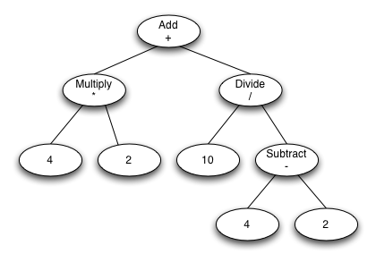
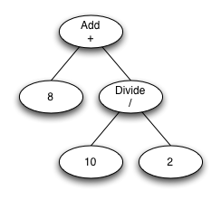

Sample Project for jaxb-visitor
This project provides an example of how to use the jaxb-visitor plugin to add the Visitor pattern to your JAXB
generated code. The schema used for the code generation provides a model for some simple math operations like add,
subtract, multiply, etc. A simple math equation can be represented as a graph on which we can perform different
operations. These Visitor pattern provides a good means of extracting the operations to their own class.
The following visitors are included to demonstrate the basic functionality of the pattern.
| Sample Graph |
Visitors |
Result |
|

|
CalculatorVisitor
Evaluates the expression by traversing the graph and evaluating each of the nodes until all are evaluated
and an answer is calculated. This class leverages the generated TraversingVisitor interface that pairs
a tree traverser with a Visitor.
|
13.0
|
ExpressionSerializerVisitor
Serializes the graph as a String.
|
((4.0 * 2.0) + (10.0 / (4.0 - 2.0)))
|
PartialEvaluatorVisitor
Rewrites the graph to evaluate any unary or binary operations that have literals as their arguments.
This provides a step by step evaluation of an expression.
|
First visit

Second visit

Third visit

|
Sample Graph